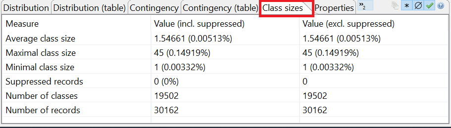

This view summarizes information about the records in the dataset. It shows the minimal, maximal and average size of the equivalence classes, the number of classes as well as the number of suppressed and remaining records.
Note, that an "equivalence class" describes a set of records which are indistinguishable regarding the specified quasi-identifying variables. Sometimes, equivalence classes are also called "cells".
For the output dataset, all parameters are calculated in two variants. One variant considers suppressed records and the other variant ignores suppressed records.
Note: The variant that ignores suppressed records uses list-wise deletion, which is a method for handling missing data. In this method, an entire record is excluded from the analysis if any single value is missing.